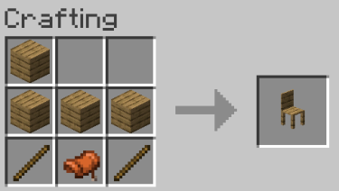

Chair
It's a chair... you place it... you sit in it...
Crafting
To craft a chair, 2 sticks, 4 oak planks, and 1 saddle is required, the following diagram shows the crafting recipe. When the chair is broken, it drops a saddle but NOT the chair. You will need to supply new sticks and wood every time you break and remake a chair.
Information
The rotation of the chair when placed rotates the nearest chair to the nearest player. For example, if you place a chair 3 blocks away while standing next to a different chair, it will turn that chair and not the newly placed one, or if a different player is standing closer to where the chair is placed, it will rotate based on the direction of that player instead. This is a limitation.